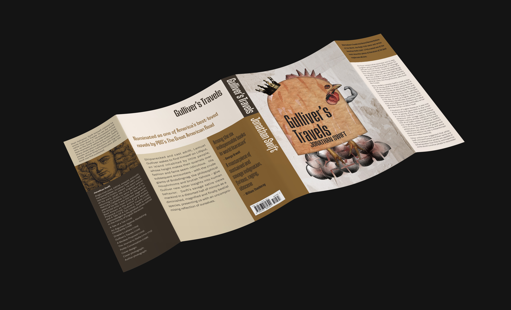

Case study · Editorial · 2026
Paperback Full Cover
A full-wrap paperback book cover designed as a complete print package including the front cover, spine, and back cover. The project explored how typography, imagery, and composition work together across an uninterrupted surface to create a cohesive reading experience before the book is even opened.

Overview
Challenge
Most covers treat the front, spine, and back as independent design problems.
Solution
Instead, I approached the wrap as one unified narrative—where the spine becomes an integral part of the story, not an afterthought.
Outcome
The finished full-wrap cover uses an exaggerated satirical metaphor to connect Swift’s fictional egg dispute to the real consequences of political power, extending the narrative across front, spine, and back.
01 — Sketches
Turning satire into a visual metaphor
Research into Gulliver’s Travels and its political satire informed the central image. Thumbnail studies explored scale and symbolism before the illustration and title were integrated into one continuous cover, with the spine and back treated as part of the same composition.

03 — Mockups

